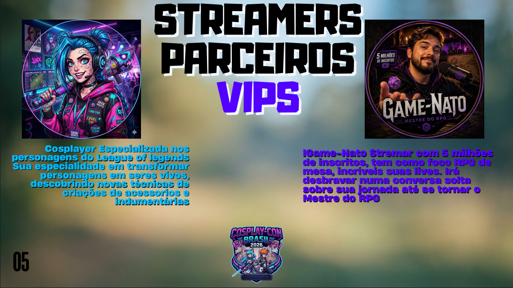
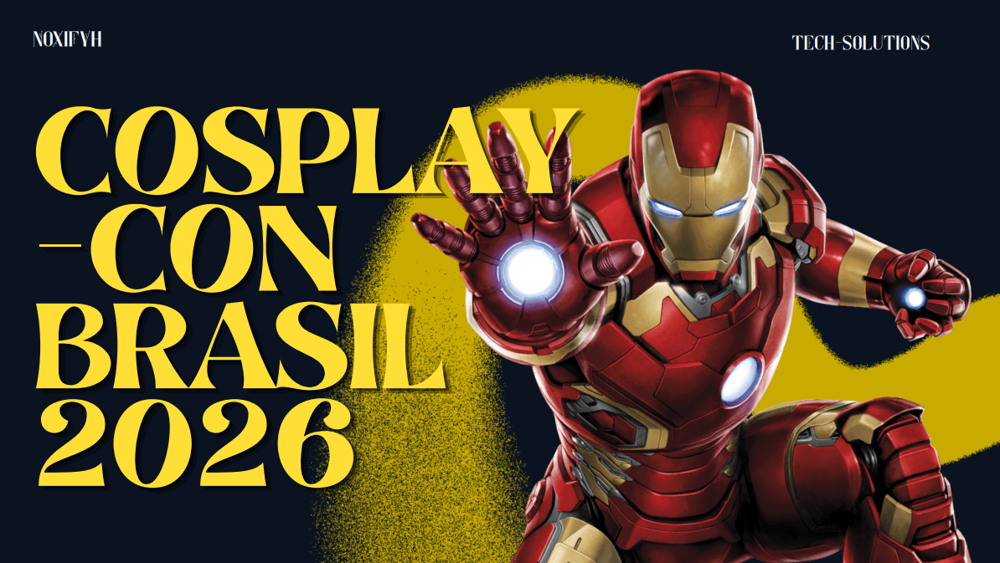
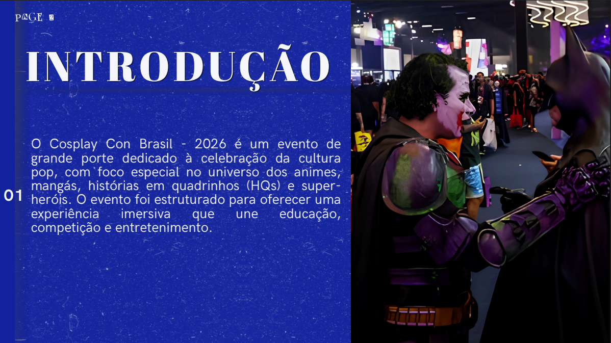
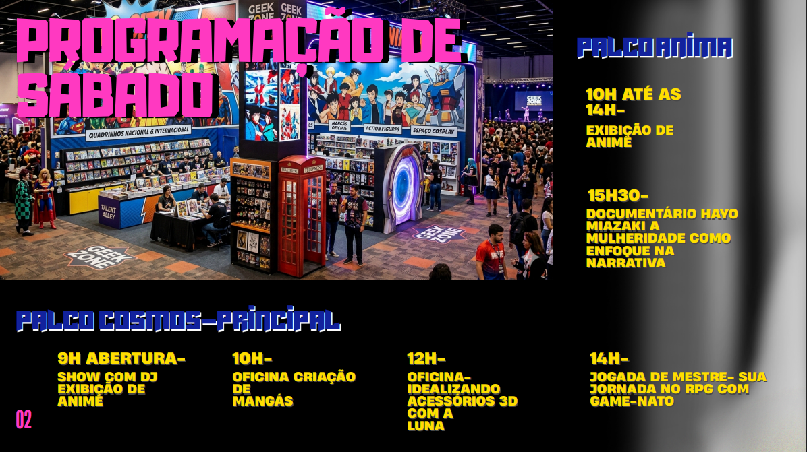
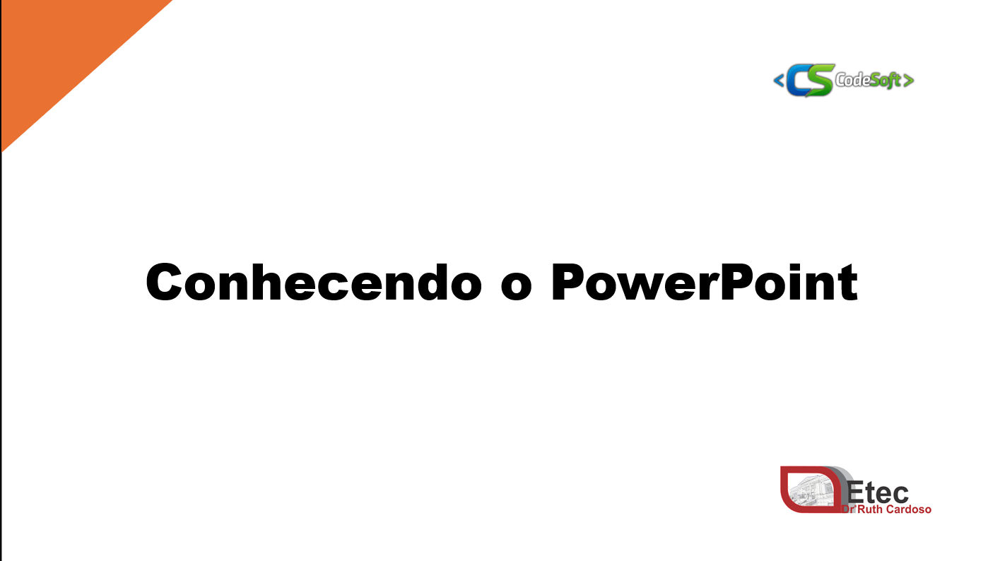
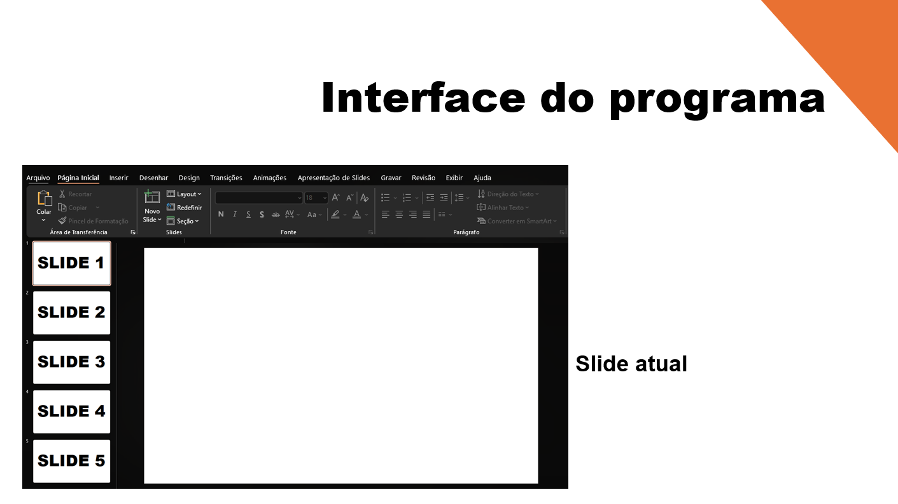
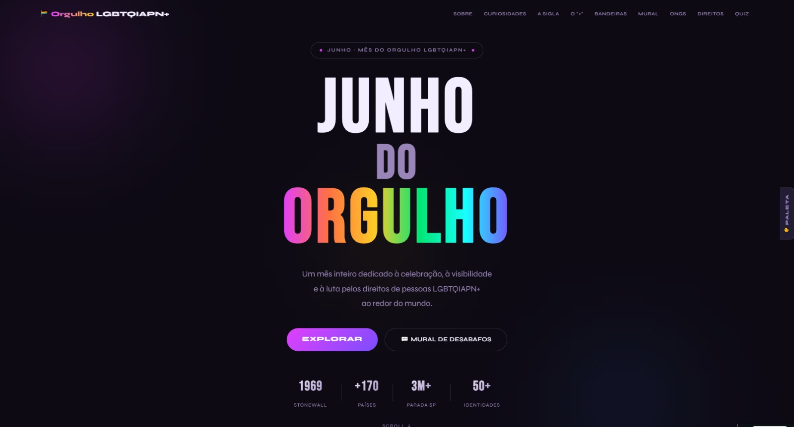
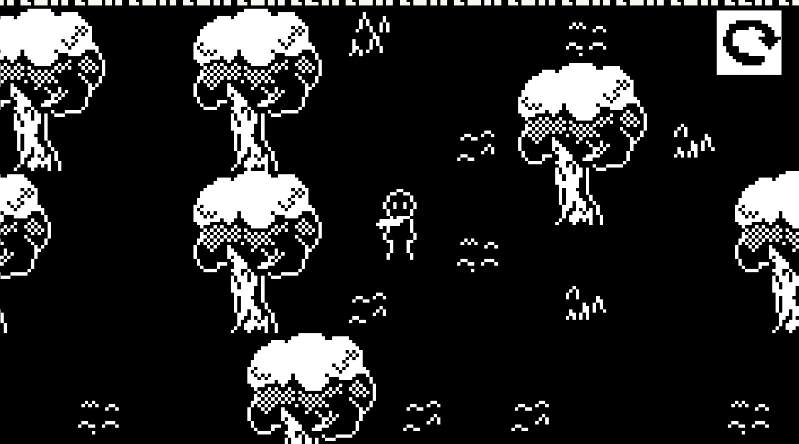

ENZO
Olá! Eu sou o Enzo.
Cursando Desenvolvimento de Sistemas
Criando Sites, Aplicativos e Jogos.
Sobre mim
Sou o Enzo, conhecido na internet por Krog. Tenho paixão por jogos desde que tive contato com a internet, e através dos jogos, veio a vontade de programar eles e fazer jogos tão bons quanto. Com 14-15 Anos em 2022 eu comecei a fazer jogos, projetos simples, mas que já me traziam o conhecimento de lógica da programação, e com tantos jogos "criados"(não terminados) eu postei apenas um, que ja foi o suficiente para me deixar na vontade de mais conhecimento e me inserir mais na área, e portanto comecei a estudar Desenvolvimento de Sistemas, que abriu meu pensamento não só pra jogos, mas sites, aplicativos etc.
Projetos de Curso
Cosplay Con Brasil 2026
Durante o Curso de Desenvolvimento de Sistemas, Junto do meu grupo de amigos do mesmo, criamos o Cosplay Con Brasil 2026, um evento fictício voltado ao universo da cultura pop, animes, mangás, quadrinhos, games e cosplay.
Trabalhei em equipe na elaboração da identidade visual do evento, desenvolvendo materiais gráficos, organização das informações e estrutura das apresentações.
Esse projeto me permitiu desenvolver habilidades em design, criatividade e organização de conteúdo. Só criamos a ideia do evento e a estrutura do site, sendo um site online geek para juntar a comunidade.





Conhecendo o PowerPoint
Fizemos também uma apresentação simples: Conhecendo o PowerPoint, uma apresentação educativa criada para ensinar os principais recursos do Microsoft PowerPoint.
Nessa apresentação falamos sobre ferramentas simples e ideias para melhorar seus slides dentro do Microsoft Powerpoint, com animações e outras funcionalidades.




Projetos de Sites

Junho da Diversidade
Site desenvolvido como projeto da ETEC para conscientizar sobre respeito, inclusão e representatividade.
🔗 Clique para visitar o site
Doe+ 013
Projeto fictício desenvolvido para a empresa Sangue Bom com foco em incentivar a doação de sangue.
🔗 Clique para visitar o siteProjetos pessoais

Cromo
Jogo top-down com foco em puzzles com cores, feito para a DDJAM - Edição de carnaval.
🔗 Clique para visitar o siteEsse jogo foi feito em duas semanas para uma Gamejam (ddjam), dentro da unity usando c#, na equipe trabalhei como game designer e artista, ajudei na programação e na pixel art do jogo também.